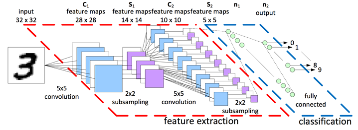

1. describe
photo organization은 사진에 대해 label을 직접 붙이거나 찍은 날짜 등의 정보를 이용하여 사진을 organic하게 관리하고 분류도 쉽게, 찾기도 쉽게 하는 프로그램이라고 이해하였다. 지금까지 photo organization program으로 사용했던 ACDSee Photo Studio Standard 2019 사용하였는데, 이 program은 라벨의 종류도 다르고 맘대로 category화 시킬 수 있어 위에 설명한 photo organization에 최적화된 프로그램이라고 생각한다. 하지만 이 프로그램으로 분류를 하려고 하면 매우 오랜 시간이 걸린다. 특히 여행 같은 특정 기간 동안 사진기로 찍은 사진들, 휴대폰으로 찍은 사진들을 모두 돌아와서 label링하고 하나하나 해당하는 폴더로 분류해낸다는 것은 굉장히 고된 작업이다. 그럼 이를 자동으로 하게 해주면 어떨까?
근래에 딥러닝은 큰 발전을 이루어왔다. 특히 CNN의 개발을 필두로 지금까지 성능이 발전해온 시각부분의 딥러닝은 성능이 사람이 구분할 수 있는 능력(5.1%)보다 성능이 더 낫게 사진을 분류(3.46%)할 수 있다고 한다. (관련 논문 https://arxiv.org/abs/1512.00567) 이런 딥러닝 기술을 photo organization에 적용하여, ‘이 model이 직접 category화 시켜주면 어떨까?’라는 생각을 하고, 이번 photo organization project에서 이 기술을 적용시켜 자동적으로 분류해주는 프로그램을 만들고자 한다. 요즘은 deep learning이 매우 발달되어 vgg-19같은 물체 분류에 대한 월등히 성능이 좋은 모델들이 많이 존재한다. 여러 모델을 조사하여, 시간과 성능의 tradeoff 관계를 고려하여 둘 다 만족 시킬 수 있는 model을 선택하려고 한다. 또한 planet이라고 불리는 사진을 input하면 어느 나라에 있는 풍경인지, 건물인지 나오는 deeplearning model을 이용하여(관련 논문 https://static.googleusercontent.com/media/research.google.com/ko//pubs/archive/45488.pdf), 해당 위치까지 labeling해주는 프로그램을 만들어 보고자 한다. 실은 사람들이 photo organization을 사용하려고 하는 이유가 사진들을 하나하나 label을 붙여 관리하려고 하는 것 인데, 이 수행을 자동으로 하게 해준다면, 그게 정말 사용자에 needs에 적합한 photo organization이라고 생각한다. 직접 설정하지 않아도 알아서 ‘2018년 체코에서 내 얼굴 나온 사진 찾아줘’ 같은 operation을 알아서 수행하여 사진을 보여주는 것을 구현할 것이다. 물론 deep learning은 모든 분류 정확도가 100%가 나올 수 없고, 인물이 작게 있는데 인물 사진으로 분류할 것인지, 건물 사진으로 분류할 것인지 등의 애매한 부분은 직접 사용자가 설정해야 할 부분이다. 이는 최대한 간단한 UI를 통해 이 기능을 구현하고자 한다. 이 방법들에 focus를 맞춰서 photo organization app을 만들어 보려고 한다.
2. functional requirement
1) deep learning 물체 인식을 이용하여 인물사진, 풍경사진, 건물사진 등으로 구분

(*간단한 classification model)
2) deep learning planet을 이용한 사진으로 어느 나라인지 labeling 해주는 기능(사진 참고)
(planet classification example)
3) 사진 정보를 이용하여 시간 별로 구분
4) 구분된 정보를 바탕으로 자동으로 폴더 화
5) 구분되지 않은 사진들은 직접 간단하게 분류할 수 있는 UI
3. major UI requirements
- functional
1) 각각의 사진을 자동적으로 분류해주는 기능
2) 분류의 기준을 설정 할 수 있는 기능
3) 각각의 사진을 자동적으로 category별로 폴더에 정리해주는 기능
4) 분류되지 않은 사진들을 간단한 동작으로 해당 폴더에 category화 시켜주는 기능
5) 간단한 편집기능
- non-functional
1) 사진을 추가할 수 있는 UI창(폴더 기준)
2) 분류되기 전 사진들을 확인할 수 있는 UI창
3) 분류된 후 확인할 수 있는 UI창
4) 분류되지 않은 사진들을 편리한 UI로 분류할 수 있게 하는 UI창
5) 사진 목록을 볼 수 있는 UI창
4. etc.
1) deep learning model을 적용하기 위한 model이 필요함.
- web 기반 photo organization
- node js를 이용한 서버 구축 및 python code 연결 예상
2) guideline
- 폴더 단위로 사진을 불러 올 수 있음
- 간단한 설정으로 어떤 category화 시킬 것인지, 특정 분류를 원할 수 있음.
- 해당 분류를 누르면 일정 시간동안 분류 작업 시작
- 분류가 안 된 것들 기타 or 직접 분류 할 수 있게
B. User analysis
1. 질문 목록
1) 당신이 생각하는 photo organization이란?
- 사진 정리 앱 -> 휴대폰에 있는 사진 정리, 그룹화,
-> 정리 : 시간 순 정렬 , 특정 조건 장소나 자기가 직접 label
2) 해외여행을 다녀온 적이 있는지
- 패스
3) 당시 사진을 정리하는데 힘들지 않았는지(ex. 어떤 사진 찾으려고 하는데 너무 오래 걸려 찾았다 던지)
- 패스
4) 기존의 사진파일 관리에 있어서 힘들었던 부분은?
- 제가 쓰는 앱에서 검색할 때 사진에 각각 하나 찾기가 힘듬
5) 이를 만약 자동으로 category화 시켜준다면~
- 자동으로 category화
-> 매우 좋음
- 기준 ex) 날짜 & 인물, 풍경, 나라, 도시
-> 날짜 제일 중요, 사람 별로 구분
- 속도
-> 아이폰 사진 기능 – 장소 별로 구분
- 간단한? 많은 기능?
-> 간단한게 좋다
- 어떤 기능?
6) 사진 수정 툴에 대한 생각
- 굳이 필요 없다
7) * 어느 분야랑 연관지어 만들어 볼 수 있을까?
- 패스
2. 인터뷰 영상
3명의 대상자와 인터뷰를 하였는데 두 명은 직접, 한 명은 카톡으로 진행하였다.(영상 2개)